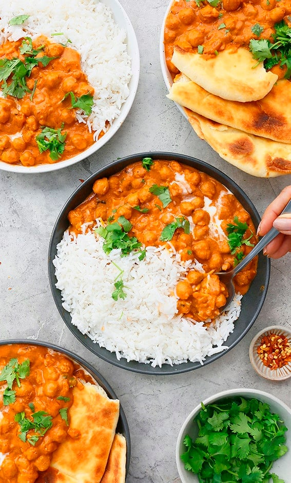

Butter Chickpeas

What is It???
This is butter chicken, but made with chickpeas instead of chicken. (You can also add chicken if you're feeling extra.)
Ingredients
Group 1
- 4 tablespoons butter
- 1/4 teaspoon cumin seeds
- 1 and 1/2 cups finely chopped onion (about 1 large onion)
- 2 large garlic cloves crushed
- 2 teaspoons crushed ginger
- 1 teaspoon salt or to taste
Group 2
- 2 tablespoons kasoori methi (dried fenugreek leaves)
- 2 and 1/2 teaspoons coriander powder
- 1/2 teaspoon cayenne pepper powder or to taste
- 1/4 teaspoon garam masala powder
- 1 15 oz can tomato sauce or blanched and pureed tomatoes
- 1/4 plus 2 tablespoons raw cashews made into a fine powder
- 2 15 oz cans chickpeas drained and rinsed or 3 cups cooked chickpeas
- 1/4 to 1/2 cup water
A note about making cashew powder: Grind raw cashews into a fine powder using any dry spice grinder or coffee grinder. Stop the grinder every few seconds and give a good shake and continue grinding. This step is important, since cashew powder will start clumping up due to the high fat content.
Group 3
- 1/2 cup heavy cream
- 2 tablespoons honey
Instructions
- Heat a large skillet over medium heat, add butter and let melt.
- Add cumin seeds and let it toast for about 10 seconds and then stir in chopped onion, crushed garlic, ginger and ½ teaspoon salt. Cook, stirring often, until onions get golden brown color (4-5 minutes).
- Add kasoori methi, coriander powder, cayenne and garam masala powder. Cook for 2 minutes, stirring constantly, until spices are toasted well (don't let it burn).
- Add tomato sauce, cashew powder, chickpeas and ¼ cup water stir well, reduce heat to low, cover and cook for 10 minutes (stirring every 3-4 minutes to make sure that it does not burn on the bottom).
- Uncover, stir in heavy cream, honey, and remaining salt. Let simmer for about 2 minutes. (Stir in additional 2 to 4 tablespoons water if the curry looks too thick).
- Remove from heat and let curry rest for few minutes before serving. Delicious served with naan and/or rice.
Original Source
Main Dishes
Home Page